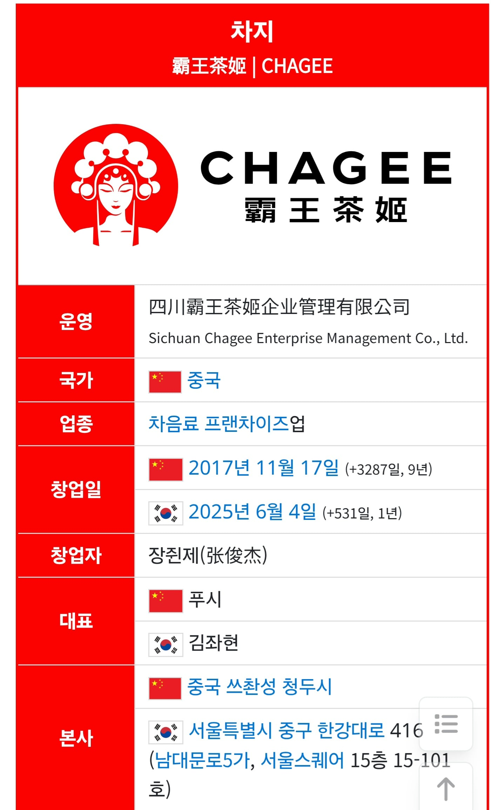

국내에 10개 지점이 생김

국내에 10개 지점이 생김
중티나
저거 말고도 요즘 중국 차? 밀크티? 프차 되게 많이 생겼더라
여기 핫하긴하더라
차지 향 좋고 맛있는데
장원영이 호들갑 떠는 리액션만큼의 맛은 아님 ㅋㅋ
차지 맛있긴함 우롱티 추천
국내에 기존에 밀크티 시장 잡고있던게 공차다보니..
공차도 사실 차보단 버블티에 더 주력이라서 저런 중국 밀크티 브랜드들이 틈새 뚫고 오더라
대표이름이 뻘하게웃기네
가게 이름이랑 대표 이름이랑 기묘한 합을 이루네
패왕별희가 한국식으로 읽는건데 그거에서 별희에 차를 붙여 차희, 근데 그걸 중국식으로 읽으면 파왕벼지 고 차 붙인게 차지임 그래서 마크가 별희인거
아니 ㅋㅋㅋㅋ 푸씨랑 차지... 그렇다고...
시덥잖은거였어
이거랑 차백도 가서 먹어봤는데 맛있드라. 흔히 아는 공차같은 우유맛 강한 밀크티랑 반대로 차 특유의 향과 맛을 강조한 느낌임. 공차가 라떼느낌이면 차지랑 차백도는 아메리카노 느낌
차백도는 매장 종종 보이던데 저거는 한번도 못봄
중국은 밀크티 브랜드도 존나많고 밀크티 종류도 존나많더라 여자들 많이감..
여기 자동화가 무섭던데. 직원이아니라 기계가 알아서 만듬
팔라딘 이동기 goat ㅋㅋㅋ
더블점프 ㅋㅋㅋㅋㅋ
리프어택 ㅋㅋㅋ
울동네도 생겼으면
아 장원영이 뭔가 했었구나
뭔 차를 줄까지 서가며 먹나했는데..
그냥 라방 중에 사온거 먹고 맛있다고 브랜드 검색한게 끝임 ㅋㅋㅋㅋ
음과양의 조화가 확실한 회사네 ㄷㄷ
찻잎 좋은거 써서 맛있긴함ㅋㅋㄲ
카페이름은 자지에
대표이름은 푸시에
오 역시 차이나 존나 잘어울려 퍼스널국가
브랜드명 쟈지에
대표 이름은 푸씌 ㄷㄷ
얘네가 중티난다 언플한 곳 아닌가?
한국은 애초에 우롱차를 잘 안만드니까 만들어도 단가가안나와서 맛을 절대로 못따라감 ;;
먹어봣는데 노맛
백아절현 맛있던데 한국도 맛똑같나
현지랑 맛 다르더라 ㅋ
개맛없던데
티우린거에우유를타서밍밍함
가격은 존나비쌈
차백도도 그렇고 뭔
대표가푸시야?
갈 일 없음
근데 중국 5천년이면 차는 당연히 맛있어야하지 않을까
너무 프리미엄으로 간 거 아닐까ㅋㅋㅋ
우리나라 차 문화가 젊은 세대들한테 아메리카노급도 아닌데...
중티난다
기본 4~ 5천 ㅋㅋㅋㅋ